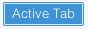
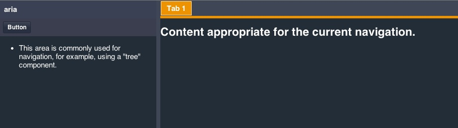

Ext JS 5.0.1 makes it possible to create highly accessible JavaScript applications by providing the tools that developers need to achieve Section 508 and ARIA compliance. Ext JS makes it easy for application developers to create UIs that are usable by people using assistive technologies to navigate the web.
Overview of Accessibility
What does software accessibility mean? In general, accessibility means that the functionality and content of an application is available to:
- Those with disabilities, especially the visually impaired
- Those who rely on assistive technologies, such as screen readers, to use a computer
- Those who cannot use a mouse to navigate an application
In 1998, the United States Congress passed the “Section 508 Amendment to the Rehabilitation Act of 1973”, more commonly known as “Section 508”. Section 508 requires Federal agencies to make all electronic information readily available to people with disabilities. Section 508 accessibility is a requirement for anyone producing applications for U.S. government agencies.
However, accessibility is beneficial to all applications since the additional features enable them to reach a larger number of users. Web applications can make significant steps toward achieving compliance with Section 508 by following the guidelines spelled out in the Web Accessibility Initiative’s “Accessible Rich Internet Applications Suite”, otherwise known as WAI-ARIA or just “ARIA”.
Accessibility in Ext JS
Thanks to Ext JS’s built-in tab indexing and focus-ability, your browser should tab and focus as you would expect. With this approach, we are able to translate components into items that the browser understands for default keyboard navigable behavior.
Accessibility support in Ext JS is designed with two major goals in mind, keyboard navigation via focus, and DOM attributes.
As of Ext JS 5.0.1, the focus and keyboard navigation functionality is “always on” due to the class-level property known as focusable. This allows all keyboard enabled components to interact with the user when tabbed into.
What this all really means is that focus is part of every application without any additional modifications needed by the developer.
Focus styling
Focus styling can be described as a method of visually indicating that an element is prepared to accept keyboard events or other user inputs. This is valuable (and necessary) for accessibility and power users that heavily rely upon keyboard navigation.
The framework provides a clear indication of the currently focused component, which updates as the focused component is changed. This indication will generally be seen as an inner border and/or body border on the focused element. This may vary slightly depending on your application’s theme. To give you control over these visual aspects, you have control over multiple Sass variables and mixin parameters related to focus.
Buttons
In previous releases, button focus styling was identical to hover styling, and was a source of confusion for some users. In 5.0.1 we changed buttons to use “inner” bordering to indicate focus. This takes the form of a 1px solid border directly inside the button’s outer border in Neptune and Crisp themes.

In Classic themes, the focus border is rendered as a dotted outline around the button’s inner element, similar to the classic “Windows” look.

You may need to control the styling of a focused button when it is hovered or pressed separately from the default hover state. To accommodate this, we’ve added SASS variables for 2 additional button states - “focus-over” and “focus-pressed”.
Tabs
Tabs have not historically had a visual indication of focus. As of Ext JS 5.0.1, Tabs are treated similarly to buttons. Focus comes in the form of a solid inner border in Neptune/Crisp themes and a dotted body outline in Classic.
Crisp:

Classic:
Just as with Buttons, Tabs have SASS variables for controlling 2 additional focus states - “focus-over” and “focus-active”.
Grids
The focused grid cell also contains a distinct focus border as seen below:

Additionally, grid column headers can also be independently focused as seen below:

Customizing Focus Styling
We expect support for keyboard navigation to be a welcome change for many applications, making them more accessible to more users. At the same time, we understand that all applications have different needs and requirements. In some cases, the default focus styling may not be desired, so we have provided the ability to customize the focus styling of any component using a robust API of SASS variables and mixins.
All of the variables having to do with focus styling will have the word “focus” in their name, so they should be easy to locate in the documentation. Simply navigate to the class documentation for the component you wish to style and scroll down to the “CSS Variables” section.
For example, to style the color of the focus border for the “default” button UI, one would use the $button-default-inner-border-color-focus SASS variable. For more information on how to use SASS in your application please refer to the Theming Guide
Keyboard Navigation
Your application’s focusable components are fully navigable using the keyboard without mouse interaction. In terms of Ext JS, this means that pressing Tab key will advance focus beginning with the URL bar to the next focusable item within your application document’s body.
However certain containers such as toolbars have slightly different behavior. The tab key will advance focus between toolbars, and arrow keys will move focus within the toolbar. This is how WAI-ARIA standard helps to ensure better usability by avoiding the need to press Tab key excessively.
For this example, let’s look at two toolbars containing multiple buttons, which are an example of focusable items.

Tabbing into Toolbar 1 will focus Button 1 as seen above. Continued tabbing will advance focus to the next component containing a focusable item. In this case, the next focusable item, Button A, lives within Toolbar 2. Focusable items may be buttons, tabs, form fields, grids, etc.
Alternatively, “shift + tab” will follow the tabindex in reverse order, abiding by the same rules as above. As an example, performing a “shift + tab” within Toolbar 2 will return focus to Toolbar 1.
Upon entering one of the above toolbars, you may also use your arrow keys to navigate between buttons. Your arrow keys will loop through all of the buttons within the toolbar. Upon reaching Button 4, focus will loop back to Button 1.
If you use your tab key to leave a toolbar, and then “shift + tab” back to said toolbar, the framework will restore focus to the previously focused button. This creates a form of state within your toolbar and other focusable containers.
Note: Upon entering an input field, arrow key navigation will only operate within said field. Tab or Shift-Tab key press will then be necessary to exit the field.
DOM attributes
A Component’s DOM elements should use attributes that provide semantic information regarding the elements’ type, state, and description. These attributes are used by assistive technologies, such as screen readers, to provide verbal cues to the user and can be categorized into two separate groups:
ARIA Roles
ARIA roles are the main indicator of a Component or Element’s type. Roles are constant and do not change as the user interacts with a Component. The most commonly used ARIA Roles in Ext JS are Widget Roles. Many of these Widget Roles directly correspond to Ext JS components. Some examples of widget roles are:
- Toolbars
- Tab bars and tabs
- Checkboxes
- Radio Buttons
- Buttons
- Breadcrumb Groups
ARIA States and Properties
DOM attributes are attributes that may change in response to user interaction or application state. An example of an ARIA State is the “aria-checked” attribute that is applied to a checkbox component when it is checked by the user. Likewise, an example of an ARIA Property is the “aria-invalid” property of a form field, which may be dynamically changed based on validation or user input.
We’ll talk about enabling ARIA States and Properties in the ARIA package section below.
ARIA Package
The “ext-aria” package is a separate Cmd package that provides support for ARIA States and Properties. The ‘ext-aria’ package can be include in the app.json requires block like any other package.
For instance:
"requires": [
"ext-aria"
],Once you’ve modified your application’s app.json file, simply rebuild the application. After building, your components should contain the ARIA states and properties described above.
That said, It may not be necessary to directly require the “ext-aria” package if your are utilizing the “ext-theme-aria” theme. ‘ext-theme-aria’ requires the ‘ext-aria’ package by default. We’ll discuss implementing ‘ext-theme-aria’ in the next section.
Note: If you’re not familiar with building an application as described above, please visit our Getting Started guide for more information.
ARIA Theme
‘ext-theme-aria’ is a high-contrast theme that makes applications easier for visually impaired users to view. ‘ext-theme-aria’ can be used out of the box, or extended to create a customized look and feel.
To incorporate the Ext JS ARIA theme into your application, simply modify the theme block in app.json. For instance:
/**
* The name of the theme for this application.
*/
"theme": "ext-theme-neptune",Should become:
/**
* The name of the theme for this application.
*/
"theme": "ext-theme-aria",Once you’ve modified your application’s app.json file, simply rebuild the application. After building, your application should be utilizing the ‘ext-theme-aria’ theme as seen below:

For information about custom theming, please check out the Ext JS Theming Guide.
Note: If you’re not familiar with building an application as described above, please visit our Getting Started guide for more information.
Conclusion
Ext JS 5.0.1 introduces core functionality to support a base level of accessibility with our new focus and keyboard navigation additions. Adding the ARIA package and ARIA theme provides you with a much simpler path to creating an accessible application. We are working towards expanding functionality to provide more robust accessibility support in future releases.